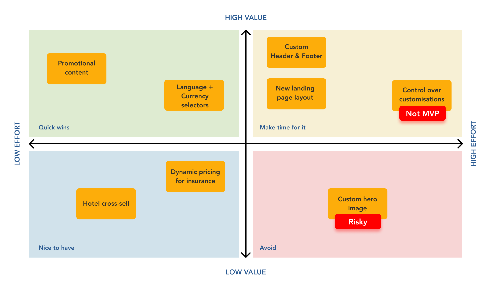
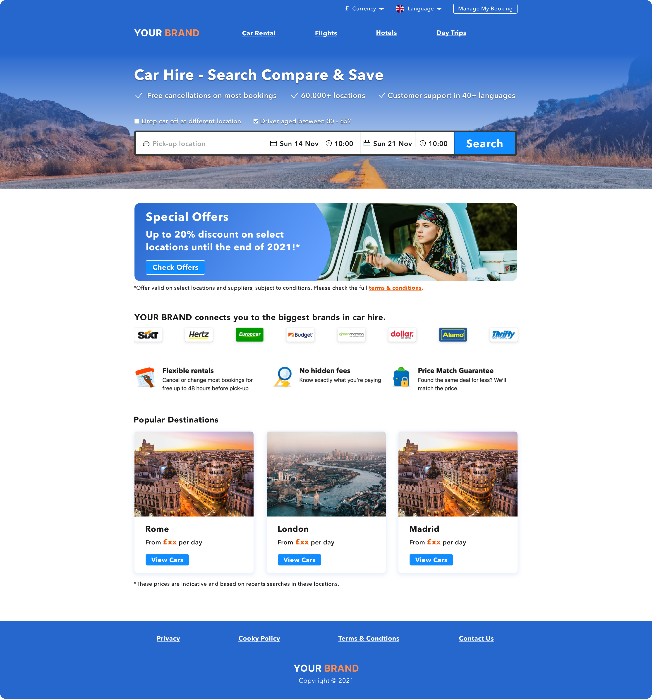

Multi-Brand Car Rental Platform for Affiliates
A new framework which different brands can adopt to offer an online car rental booking system
Project Overview
Context: One of the travel brands I worked for offers an affiliation program that allows affiliated companies to provide their customers with a car rental booking system under their own brand.
When: 2021
My responsibilities:
- Research
- UI Design
- Prototyping
- Usability Testing
Business goal: Increase affiliates retention and attract new businesses to join our affiliate program.
Challenge prompt: The design of the current affiliate system is outdated and some features offered across brands are inconsistent. Design a new themable framework which all affiliated brands will sit on with their own look and feel.
Success metrics so far:
- Brand representation: 4/5 (scored by affiliates)
- Quality of design: 5/5 (scored by affiliates and test participants)
- Clarity of information: 4/5 (scored by test participants)
- Tasks success rate: Success with minor issue (scored by me)
The Process
Methodologies used for this project

User Research
What's important for our affiliates?
Foundational user research was conducted with some of our biggest B2B affiliate representatives to understand their needs, goals and struggles.
The key question was: "What is important for your brand to have on a car rental platform?".
Key learnings:
B2B Persona
Who are we dealing with?
Our B2B persona was identified as a Brand Ambassador who represents one of our biggest affiliates.

Prioritisation
What should I focus on first?
Using an "Impact / Effort" matrix I established which themes to focus on for the first iteration. Even if considered as high impact, "Control over customisations" was left out as it will require a product of its own which would empower affiliates to directly apply changes on the site.
Developers and Management also agreed on this classification.

Competitor Analysis
What are our competitors' strengths & weaknesses?
A competitor analysis was conducted to understand how a similar B2B product is offered by other providers.
There is room for opportunities here to cover some gaps in the market.

Here are some examples of white label products offered by our competitors:


Outdated Design
Example of the old layout we offered to our affiliates

Addition to the current user flow
Improve the promotion campaigns experience
An alternative path (in dark blue) has been introduced in the existing user journey to get to the search results. This represents a brand new page dedicated to special offers reachable when clicking on the banner.
This will increase visibility of locations where special offers are applied, instead of making a search and hope to find one.
This will later be validated during the A/B testing phase.
The Wireframe
Structure of the new brand agnostic design
Having a design system allows you to quickly generate medium/high fidelity mockups. Below is the design of the landing page with some annotations explaining how this is gonna fit with multiple brands.
Annotations:
- Custom Header: The affiliate can provide their own header to reinforce their brand presence and advertise other services they might offer
- Hero Section: Unnecessary distractions in the background of the image are removed so that it gives more legibility to the content. A tinted overlay will be applied to restore the natural color of the sky
- Promotional Content: When needed, the banner component can be enabled to display promotions. The image can be provided by the affiliate following our dimensions guidelines
- Custom Footer: Similar to the custom header, this will feature useful links

Introducing a colour palette
Colours will depend on our affiliates' brand guidelines
The components will be mapped to a colour palette so that the design reflects the affiliate's brand like in the example below:


Here are some other examples with different colour palettes applied:

Mobile Examples

Before & After
Key improvements:
- Introduction of language/currency selectors and "Manage My Booking" button
- Less overwhelming search panel
- Clickable promotional banner which takes the user to the "Special Offers" page
- More prominent USPs thanks to the use of icons
- More modern "Popular Destinations" card

Interactions
End-to-End high fidelity prototype
Affiliates Validation
Does this solution meet our affiliates' needs?
The mock-ups were sent to 5 of the biggest affiliates to gather their first impressions.
5 out of 5 said they would happily switch to this new design.
Some requests were made around the possibility to use custom images for the hero section. To avoid having busy backgrounds and contrast issues, I strongly advised against this, but in alternative I suggested having a selection of different images to pick from. Here is one example:

Usability Testing
What do our end users think of it?
10 participants were invited to a moderated remote testing phase to establish if the designs rightly represented some of our biggest affiliated brands and to identify usability improvements.
Key findings:
- Most participants recognised the affiliates' brand without showing the logo
- Few participants were confused as they didn't know some brands also offered car rentals
- Most participants completed the tasks with minor issues
- Some participants said they expect to see a "strikethrough" price if a special offer is applied
- All participants think the design is clean and appealing